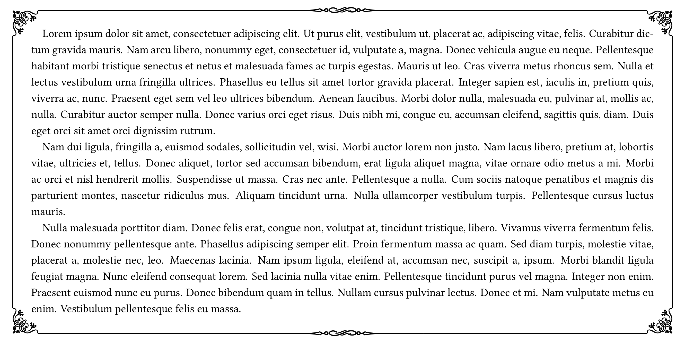
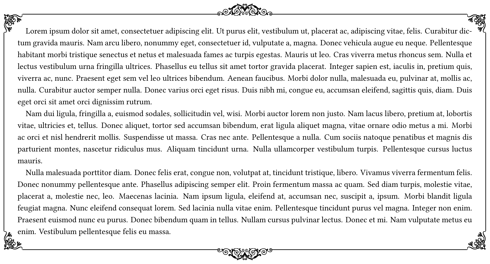

つくったboxを紹介する場所
例1：gbox

\newtcolorbox{gbox}[1][]{
breakable,
enhanced,
frame hidden,
sharp corners,
boxsep=5pt,
leftrule=0pt,
toprule=0pt,
rightrule=0pt,
bottomrule=0pt,
before upper={\setlength{\parindent}{1\zw}},
colframe=black,
boxrule=0pt,
colback=white,
left=10pt, right=10pt, top=10pt, bottom=10pt,
overlay={
\node[anchor=north west, inner sep=0pt] (NW) at (frame.north west)%
{\pgfornament[width=20pt]{61}};
\node[anchor=north east, inner sep=0pt] (NE) at (frame.north east)%
{\pgfornament[width=20pt, symmetry=v]{61}};
\node[anchor=south west, inner sep=0pt] (SW) at (frame.south west)%
{\pgfornament[width=20pt, symmetry=h]{61}};
\node[anchor=south east, inner sep=0pt] (SE) at (frame.south east)%
{\pgfornament[width=20pt, symmetry=c]{61}};
\draw[line width=0.95pt] (NW.north east) -- (NE.north west);
\draw[line width=0.95pt] (NW.south west) -- (SW.north west);
\draw[line width=0.9pt] (NE.south east) -- (SE.north east);
\draw[line width=0.9pt] (SW.south east) -- (SE.south west);
\node[fill=white, inner sep=-1pt] at ($(frame.north)+(0,0.39pt)$)%
{\pgfornament[width=130pt]{88}};
\node[fill=white, inner sep=-1pt] at ($(frame.south)+(0,0.39pt)$)%
{\pgfornament[width=130pt]{88}};
},
#1
}
例2：gbox2

\newtcolorbox{gbox2}[1][]{
breakable,
enhanced,
frame hidden,
sharp corners,
boxsep=5pt,
before skip = 17pt,
after skip = 17pt,
leftrule=0pt,
toprule=0pt,
rightrule=0pt,
bottomrule=0pt,
before upper={\setlength{\parindent}{1\zw}},
colframe=black,
boxrule=0pt,
colback=white,
left=10pt, right=10pt, top=10pt, bottom=10pt,
overlay={
\node[anchor=north west, inner sep=0pt] (NW) at (frame.north west)%
{\pgfornament[width=20pt]{61}};
\node[anchor=north east, inner sep=0pt] (NE) at (frame.north east)%
{\pgfornament[width=20pt, symmetry=v]{61}};
\node[anchor=south west, inner sep=0pt] (SW) at (frame.south west)%
{\pgfornament[width=20pt, symmetry=h]{61}};
\node[anchor=south east, inner sep=0pt] (SE) at (frame.south east)%
{\pgfornament[width=20pt, symmetry=c]{61}};
\draw[line width=0.70pt] (NW.north east) -- ($(frame.north) + (-30pt,0pt)$);
\draw[line width=0.70pt] (NE.north west) -- ($(frame.north) + (30pt,0pt)$);
\draw[line width=0.70pt] (NW.south west) -- (SW.north west);
\draw[line width=0.70pt] (NE.south east) -- (SE.north east);
\draw[line width=0.70pt] (SW.south east) -- (SE.south west);
\node[fill=white, inner sep=0pt] at ($(frame.north)+(-15pt,5pt)$)%
{\pgfornament[width=30pt]{55}};
\node[fill=white, inner sep=0pt] at ($(frame.north)+(15pt,5pt)$)%
{\pgfornament[width=30pt]{56}};
\node[fill=white, inner sep=0pt] at ($(frame.south)+(-15pt,-5pt)$)%
{\pgfornament[width=30pt,symmetry=h]{55}};
\node[fill=white, inner sep=0pt] at ($(frame.south)+(15pt,-5pt)$)%
{\pgfornament[width=30pt,symmetry=h]{56}};
},
#1
}